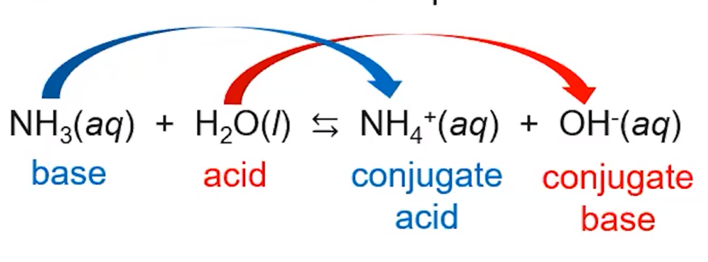

Neutralization Reaction
When an acid and base are mixed, a neutralization reaction occurs
Usually, neutralization reactions produce water and a salt
Salt: an ionic compound made of a cation (from the base) and an anion (from the acid)
Acid + base => salt + water
HCL (aq) (acid) + NaOH (aq) (base) => NaCl(aq)(salt) + H2O (aq)(water)
HCl => strong acid = completely disassociates
NaOH => strong base = completely disassociates
H^+^ + Cl^-^ + Na^+^ + OH^-^ => Na^+^ + Cl^-^ + H2O
Only strong acids/bases disassociate completely
Bronsted-Lowry Acid-base reaction
Involves transfer of 1 or more protons
Baad => bases accept acids donate
Acid => proton donor
Base => proton acceptor
Conjugate base pairs:
Acid (donates proton) and becomes conjugate base
Base (accepts a proton) and becomes conjugate acid
NOTE: Bronsted-Lowry bases include BOTH base and conjugate bases
In aqueous acid-base reactions water can:
{width="4.927083333333333in" height="1.8229166666666667in"}